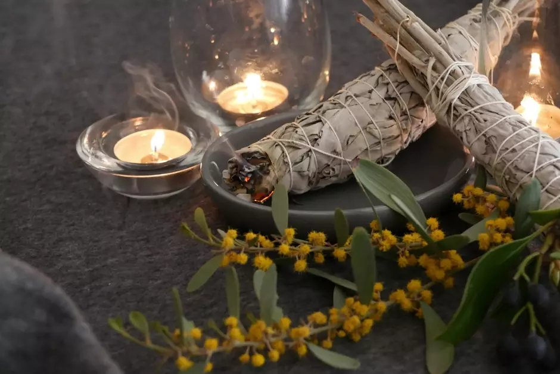

Como fazer um ritual de limpeza energética da sua casa

"A casa que você habita carrega a energia de tudo que já aconteceu dentro dela. Limpar o espaço é limpar a si mesmo."
Toda casa acumula energia. Discussões, medos, doenças, visitas pesadas — tudo deixa uma marca vibracional no ambiente.
ANTES DE COMEÇAR
Abra todas as janelas e portas. A energia densa precisa de saída. Tenha em mãos: um defumador de ervas, sal grosso e uma tigela pequena.
PASSO 1 — SAL NOS CANTOS
Coloque pequenas porções de sal grosso nos quatro cantos de cada cômodo. O sal absorve energias densas. Deixe por pelo menos uma hora. Depois, recolha e descarte fora de casa.
PASSO 2 — A DEFUMAÇÃO
Acenda o defumador e comece pela porta de entrada. Caminhe no sentido anti-horário pelos cômodos, passando a fumaça por todos os cantos.
PASSO 3 — SELANDO O ESPAÇO
Após a defumação, acenda uma vela branca na entrada. Feche o ritual agradecendo.
"Um espaço limpo energeticamente é um espaço que descansa, que cura, que acolhe."